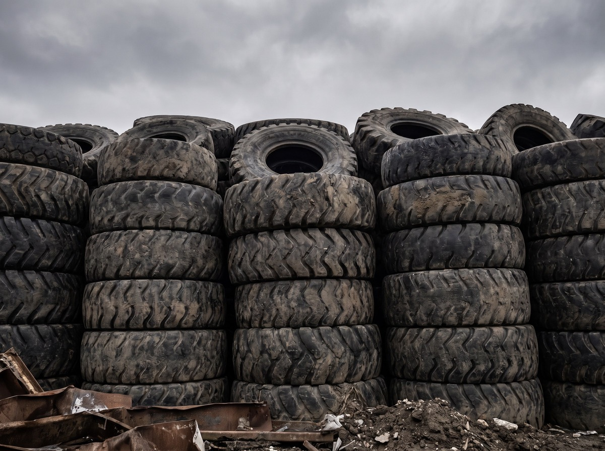
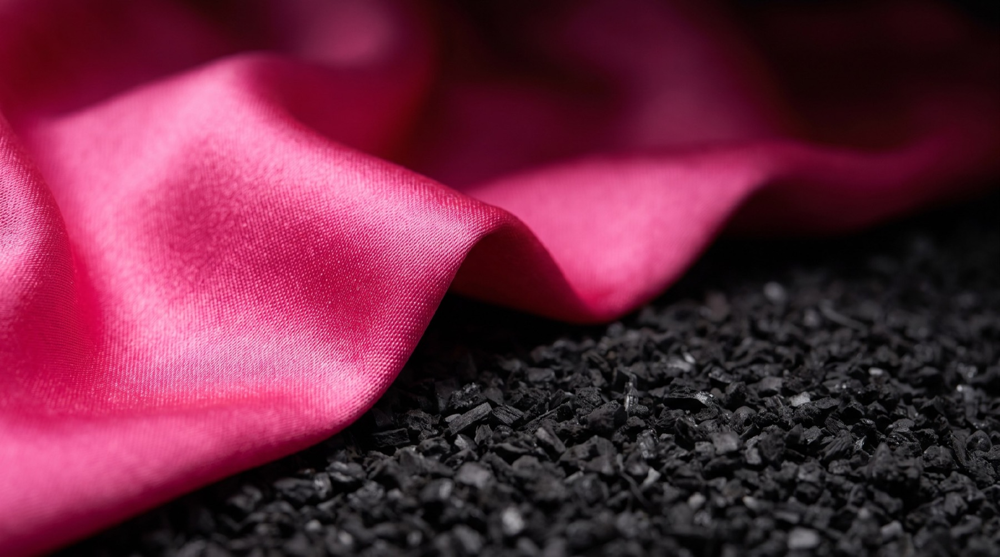
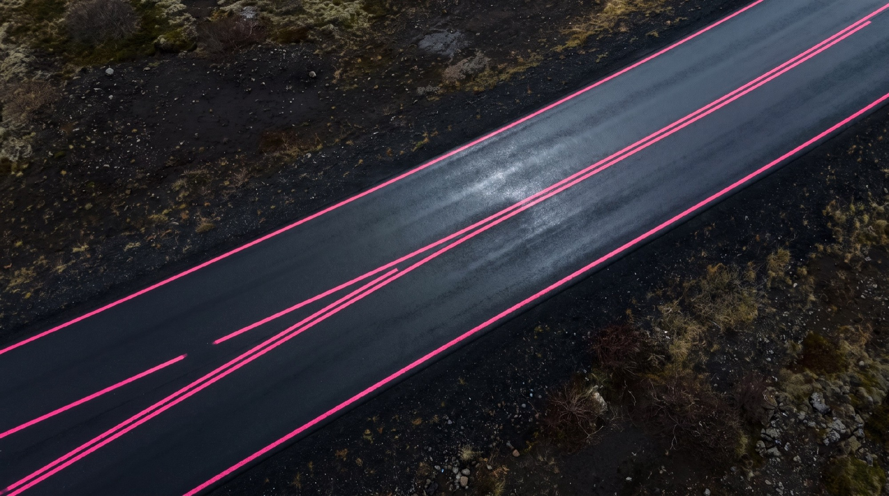

01 · Твоя идея
Идея рабочая. Три причины, почему
Ты предложила эпатаж, фотосессию и шины БелАЗа как сырьё. Разбираю, почему это не просто весело.
У дорожников не бывает розового
Открой подряд десять сайтов производителей дорожной химии. Все жёлто-чёрные или сине-серые, у всех каток на закате. Розовое на чёрном не занято никем. Это редкий случай, когда отличаться ничего не стоит: цвет бесплатный.
История уже есть, её не надо выдумывать
Шина отслужила, её перемололи, она легла в дорогу. Это не рекламная идея, это твой техпроцесс. Скопировать нельзя: у конкурента другое сырьё.
У продукта нет лица, а у тебя есть
АДМ - это аббревиатура, ГОСТы и таблица характеристик. Аббревиатуру никто не пересылает знакомым. Человека пересылают. С лицом у консорциума появляется то, что вообще можно репостнуть.
Ты придумала не фотосессию. Ты придумала, как показать переработку так, чтобы это досмотрели до конца.
02 · Визуальный язык
Шина. Крошка. Дорога.
Три кадра, на которых держится весь сайт. Один путь материала, снятый три раза.

Отслужившая покрышка
Сжигать вредно, закапывать бессмысленно: покрышка разлагается больше ста лет.

Сырьё для модификатора
То самое «сырьё», с которого начинается твой продукт.

Покрытие, которое служит дольше
Модификатор меняет свойства битума: ниже температура хрупкости, выше пластичность.
Чёрный выбирать не надо: это асфальт и резина, он и так везде. Розовый становится единственным акцентом на всём сайте - заголовки, кнопки, подписи. Даже полосы разметки в оформлении розовые.
Третьего цвета не будет. Два цвета запоминаются, пять не запоминает никто.
Жёлто-чёрный есть у каждого дорожника. Розовое на чёрном - ни у кого.

03 · Первый экран
На первом экране - ты
Сейчас на главной вместо описания консорциума печатается программный код. Вот эта страница, снимок сделан 24 августа.

Сегодня здесь
- Программный код вместо текста
- Заголовок, который ничего не обещает
- Ни одного человека в кадре
- Год в подвале: 2018
Вкладку закрывают за три секунды.
Будет здесь
- Твой кадр во весь экран, без рамок и подложек
- Одна фраза, которую запоминают
- Ссылки на твои профили сразу, на видном месте
- Кнопка запроса модификатора рядом с ними
Досматривают до конца и идут к тебе в профиль.
Кадр со съёмки я не подставляю заранее и не рисую: это твоя фотография, а не моя фантазия. В презентации стоят референсы настроения - как будет выглядеть свет, цвет и масштаб.
04 · Зачем вообще сайт
Ты написала: им никто не пользуется
Так и есть. Причина простая: на него никто не вёл.
Сайт не приводит людей сам. Людей приводишь ты: сторис, рилс, репост, ссылка в переписке, визитка на выставке. Сайт - это место, куда они приходят. Пока вести было некому, он и правда был не нужен.
Как только появляется бренд и профили, которые ты ведёшь, сайт становится единственной страницей, где человек видит тебя целиком: и продукт, и документы, и все твои профили в одном месте.
Ленту пролистывают и забывают за сутки. Сайт стоит на одном адресе и никуда не девается.
И обратно: с сайта человек попадает в твой профиль, из профиля на сайт. Не два не связанных места, а замкнутый круг.

05 · Что за первым экраном
Эпатаж приводит. Держит содержание
Яркая обложка нужна, чтобы страницу открыли. Дальше должно быть что читать, иначе получится красивая пустая страница и второй раз никто не вернётся.
Поэтому за первым экраном ставим то, что у тебя реально есть. Активный дорожный модификатор: какую задачу решает, характеристики таблицей, выгода против привычного решения. Смесь не расслаивается при перевозке и не требует стабилизирующей добавки на основе целлюлозы - это аргумент для снабженца, и он должен быть на странице, а не в письме через три дня.
Розовое платье приводит человека. Модификатор и документы его удерживают.
И отдельно про партнёров. Кроме тебя в консорциуме есть другие участники, и сайт остаётся их рабочей площадкой: продукция, документы, условия поставки, контакты - всё это никуда не уходит. Меняется обложка и голос сайта, а не его содержимое.


06 · Подтверждения
То, что сейчас никто не находит
Сейчас часть этого лежит ссылками на скачивание внутри одной страницы, часть - логотипами в подвале без подписей. Для человека, который решает, стоит ли связываться с консорциумом, это и есть главный аргумент. Сейчас его надо искать.
07 · Что появится
Чего на сайте нет вообще
Шесть вещей, которые спрашивают до звонка, а не на звонке.
- 01Где материал уже лежит: объекты, годы, километры
- 02Сколько экономит подрядчику против привычного решения
- 03Все сертификаты в одном месте, скачиваются одним файлом
- 04С кем говорить: имя, телефон, срок ответа
- 05Как войти в консорциум новому участнику
- 06Все твои профили в соцсетях на видном месте
08 · Скучная, но обязательная часть
Что чиним заодно
Раз всё равно пересобираем сайт, эти вещи закрываются попутно. Я проверил их сам 24 августа, прямо на dor-snab.com.
Браузер пишет «не защищено»
Защищённого соединения нет. Проверял напрямую: порт, через который работает защита, не отвечает вообще. Данные из формы обратной связи идут открытым текстом.
Последняя новость - 2017 год
Самая поздняя новость - июль 2017 года. Внизу каждой страницы стоит «© 2015–2018». Сайт выглядит брошенным, хотя компания работает.
Английская версия не переведена
Меню переключается на английский, а содержание остаётся русским и вперемешку с программным кодом.
При последнем редактировании текст вставили с кавычками-ёлочками вместо программных. Браузер перестал понимать эти куски как команды и печатает их как есть. Таких мест я насчитал около тридцати.
09 · Форматы работы
Три формата, разный объём работ
Дешевле не значит хуже сделано. Разница в объёме: как далеко идём от сайта к бренду. Технические проблемы из прошлого раздела закрывает любой из трёх.
Бренд целиком
$7 000
Когда нужен не сайт, а узнаваемое имя
Всё из среднего формата, плюс:
- Сценарий съёмки: список кадров, референсы, свет, композиция. Готовое задание фотографу
- Твои соцсети в одном стиле с сайтом: обложки, шаблоны постов, аватары
- Отдельный раздел про переработку покрышек: как отслужившая шина становится дорогой
- Английская версия под зарубежного партнёра: стандарты, сертификация, условия поставки
- Три месяца сопровождения после запуска
Сайт с характером
$5 500
Когда нужен сайт, который не стыдно поставить в шапку профиля
Всё из базового формата, плюс:
- Первый экран собран под твою съёмку: кадр во весь экран, одна фраза
- Блок со всеми профилями на видном месте, а не значками в подвале
- Страницы материалов переделаны в рабочие: характеристики таблицей, выгода в цифрах, сертификаты рядом
- Все документы в одном месте, открываются и скачиваются в один клик
- Заявки собираются в одно место, ни одна не теряется
- Страницы собраны под отраслевые запросы, чтобы тебя находили поиском
Переодеть
$4 000
Когда надо закрыть вопрос и больше к нему не возвращаться
- Новый сайт на современном движке вместо версии 2014 года
- Новый стиль: чёрное и розовое, без стоковых катков на закате
- Защищённое соединение и нормальная работа с телефона
- Восемь страниц как сейчас, содержание переписано заново
- Английская версия целиком, а не только меню
- Ссылки на твои соцсети
В формате «Бренд целиком» я делаю сценарий и раскадровку съёмки.
Работу фотографа, площадку и всё, что снимается на месте, организуешь ты у себя -
это в сумму не входит.
Твой личный сайт-визитка - отдельный проект, в эти суммы он тоже не входит.
Посчитаю его отдельно.
10 · Как работаем
Как идёт работа
Четыре этапа. От двух с половиной до четырёх недель, в зависимости от формата.
Разбираем идею и структуру
Что должно быть на сайте и в каком порядке, какие кадры нужны на съёмке. Здесь же собираем материалы: тексты, фото объектов, документы, ссылки на профили.
Первый экран
Показываю первый экран и стиль до того, как собирается весь сайт. Здесь я и рассчитываю на правки: переделать один экран дешевле, чем весь сайт.
Сборка
Все страницы, содержание, документы, английская версия.
Проверка и запуск
Скорость, телефон, формы, защищённое соединение, перенос на твой адрес.
Если делаем съёмку, между первым и вторым этапом добавляется время на неё. Сколько именно - зависит от твоего графика, а не от моего.
11 · Что нужно с твоей стороны
- -Доступ к домену dor-snab.com. Сам сайт работает до дня переключения
- -Материалы: фото объектов и производства, документы, актуальный список участников
- -Ссылки на все твои профили в соцсетях
- -Один человек, который принимает работу и утверждает макеты
- -Полчаса на созвон в начале и по полчаса на приёмку каждого этапа
12 · Условия
- -Предоплата 50%, остаток после запуска
- -Хостинг и домен на первый год входят в стоимость
- -Правки в рамках согласованной структуры не ограничены
- -Исходники и все доступы передаются тебе, привязки ко мне нет

Ближайший шаг
Сайт есть. Идея есть. Осталось решить, насколько громко.
Консорциум работает одиннадцать лет и делает модификатор из отслуживших покрышек. Сейчас нет ни одного места в интернете, где это выглядело бы интересно. Месяц - и такое место появляется.
Выбери формат, и я соберу точный план: какие страницы, какие кадры нужны на съёмке, что нужно от тебя и по каким дням что происходит. Если удобнее сначала голосом - скажи, когда позвонить.
Написать Маркуили ответь прямо в переписке, где получила эту ссылку